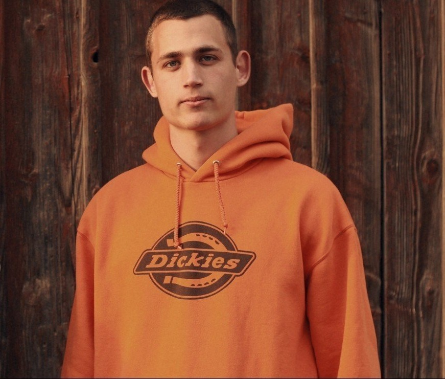

Федусів Дмитро
КОНТАКТИ
- Моб. телефон: +38 (099) 1191925
- E-mail: asalesbox@gmail.com
- Facebook
- Дата народження: 19.11.1990
ПРО МЕНЕ
Я відкрита, щира людина, яка любить працювати у команді та цінує атмосферу у колективі.
Здатний працювати на свій повний потенціал, сумлінно та продуктивно, що приносить результати.
Отримую задоволення від спілкування з людьми та люблю дарувати їм приємні емоції.
МОЇ ПРОЕКТИ
- Github: CV українською
- Github: CV англійською
- Github: Зміст у вигляді посилань
- Github: Список покупок
ДОСВІД РОБОТИ
ТРК "Простір" (2012 - 2017)
Посада: Монтажник інтернет-мереж
Обов’язки:
- Підключення нових клієнтів до мережі інтернет
- Будівництво, ремонт і обслуговування кабельної мережі
- Усунення пошкоджень та аварійних ситуацій
- Налаштування обладнання клієнтів
Готель "ДЮК" (2018-2020)
Посада: Різноробочий-охоронець
Обов’язки:
- Спостереження за безпекою території та в будівлі
- Підтримання належного стану території
- Дрібний побутовий ремонт
- Спілкування з гостями та надання необхідної інформації
ОСОБИСТІ ЯКОСТІ
- комунікабельність
- відкритість
- відповідальність
- стресостійкість
- здатність швидко навчатись та засвоювати інформацію
- багатозадачність та уважність до деталей
ОСВІТА
Львівський коледж Державного університету телекомунікацій
Ступінь освіти - Спеціаліст
ЗНАННЯ МОВ
- Українська - рідна
- Російська - вільне володіння
- Англійська - середній рівень